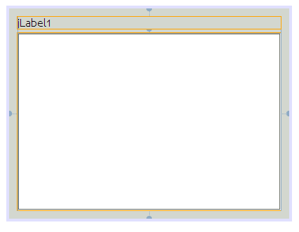
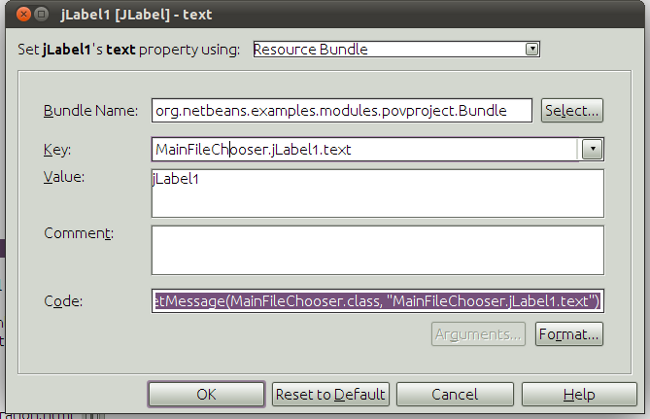
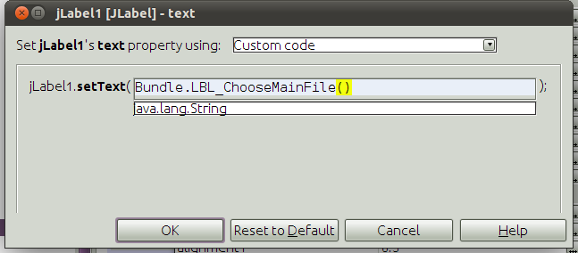
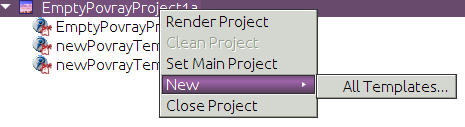
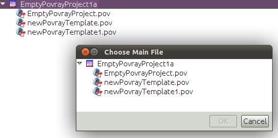

Apache NetBeans
Apache NetBeansLatest release
Writing POV-Ray Support for NetBeans IX—Build Support
| This tutorial needs a review. You can edit it in GitHub following these contribution guidelines. |
Project Action Support
You may recall that early on, when we were writing PovrayProject, we stubbed out the implementation of PovrayProject.ActionsProviderImpl—so in fact the build, clean and run actions are all disabled when a POV-Ray project is active. We should quickly implement them.
Open PovrayProject in the code editor, and implement the methods of ActionProviderImpl as follows:
private final class ActionProviderImpl implements ActionProvider {
@Override
public String[] getSupportedActions() {
return new String[]{
ActionProvider.COMMAND_BUILD,
ActionProvider.COMMAND_CLEAN,
ActionProvider.COMMAND_COMPILE_SINGLE
};
}
@Override
public void invokeAction(String string, Lookup lookup) throws IllegalArgumentException {
int idx = Arrays.asList(getSupportedActions()).indexOf(string);
switch (idx) {
case 0: //build
final RendererService ren = (RendererService) getLookup().lookup(RendererService.class);
RequestProcessor.getDefault().post(new Runnable() {
@Override
public void run() {
FileObject image = ren.render();
//If we succeeded, try to open the image
if (image != null) {
DataObject dob;
try {
dob = DataObject.find(image);
OpenCookie open = (OpenCookie) dob.getNodeDelegate().getLookup().lookup(OpenCookie.class);
if (open != null) {
open.open();
}
} catch (DataObjectNotFoundException ex) {
Exceptions.printStackTrace(ex);
}
}
}
});
break;
case 1: //clean
FileObject fob = getImagesFolder(false);
if (fob != null) {
DataFolder fld = DataFolder.findFolder(fob);
for (Enumeration en = fld.children(); en.hasMoreElements();) {
DataObject ob = (DataObject) en.nextElement();
try {
ob.delete();
} catch (IOException ioe) {
Exceptions.printStackTrace(ioe);
}
}
}
break;
case 2: //compile-single
final DataObject ob = (DataObject) lookup.lookup(DataObject.class);
if (ob != null) {
final RendererService ren1 = (RendererService) getLookup().lookup(RendererService.class);
RequestProcessor.getDefault().post(new Runnable() {
@Override
public void run() {
if (ob.isValid()) { //Could theoretically change before we run
ren1.render(ob.getPrimaryFile());
}
}
});
}
break;
default:
throw new IllegalArgumentException(string);
}
}
@Override
public boolean isActionEnabled(String string, Lookup lookup) throws IllegalArgumentException {
int idx = Arrays.asList(getSupportedActions()).indexOf(string);
boolean result;
switch (idx) {
case 0: //build
result = true;
break;
case 1: //clean
result = getImagesFolder(false) != null
&& getImagesFolder(false).getChildren().length > 0;
break;
case 2: //compile-single
DataObject ob = (DataObject) lookup.lookup(DataObject.class);
if (ob != null) {
FileObject file = ob.getPrimaryFile();
result = "text/x-povray".equals(file.getMIMEType());
} else {
result = false;
}
break;
default:
result = false;
}
return result;
}
}Ensuring There Is A Main File
We now have handling implemented for all of the standard project actions that make sense for a POV-Ray project. Now, if you’ve been following very carefully, you may have noticed that there is one bug we need to fix: isActionEnabled() will always return true for build. But we implemented the following code in Povray.getFileToRender():
render = provider.getMainFile();
if (render == null) {
ProjectInformation info = (ProjectInformation) proj.getLookup().lookup(ProjectInformation.class);
//XXX let the user choose
throw new IOException(NbBundle.getMessage(Povray.class, "MSG_NoMainFile", info.getDisplayName()));
}So if there is no main file set for a project, the build action will be enabled, but if it is invoked, it will throw an exception! The simple choice would be to test if there is a main file, and if not, disable the build action—but this would be rather non-intuitive to the user who might not be able to figure out what is wrong with the project. And we would miss an opportunity to explore the Explorer & Property Sheet API, together with the Dialogs APIs!
So instead, we will post a dialog which will allow the user to choose which file should be the main file, if none is set when build is called:
-
On the Povray Project module, following the procedure outlined in previous sections of this tutorial, add a module dependency on the Explorer & Property Sheet API.
-
Right-click the
org.netbeans.examples.modules.povprojectpackage and chose New > Other > Swing GUI Forms > JPanel Form. Click Next. Name The JPanel "MainFileChooser" and click Finish. The GUI Designer (Matisse) will open.
-
In the Palette (Ctrl-Shift-8), click the item for
JLabeland drag it to the top of theJPanel. Drag the right-hand edge of theJLabelto the right edge of theJPanelso that theJLabelwill resize automatically at runtime.
1.
In the Palette, click the item for JScrollPane and drag it to the JPanel below the JLabel. Drag the bottom right corner of the JScrollPane down and to the right until the bottom and right edge alignment guidelines appear. The result should look like this:

-
Make sure the Properties window (Ctrl-Shift-7) is open. Select the
JLabeland and then click the […] button for itstextproperty in the Properties window. A custom editor will open:

-
Change the drop-down at the top of the dialog to "Custom code", as shown below, and then type
Bundle.LBL_ChooseMainFile():

Click OK. Now add this annotation above the class signature:
@NbBundle.Messages("LBL_ChooseMainFile=Select Main File")
public class MainFileChooser extends javax.swing.JPanel {Save the file. Now the annotation is converted to a String constant in a Bundle class and the reference to this class in the initComponents block should not show an error anymore.
-
Edit the signature of the class so that it implements the interface
ExplorerManager.Provider:
public class MainFileChooser extends javax.swing.JPanel implements ExplorerManager.Provider {-
Add the following code to implement
ExplorerManager.Provider:
private final ExplorerManager mgr = new ExplorerManager();
public ExplorerManager getExplorerManager() {
return mgr;
}-
Modify the constructor so it reads as follows:
public MainFileChooser(PovrayProject proj) {
initComponents();
setLayout(new BorderLayout());
LogicalViewProvider logicalView = (LogicalViewProvider) proj.getLookup().lookup(LogicalViewProvider.class);
Node projectNode = logicalView.createLogicalView();
mgr.setRootContext(new FilterNode(projectNode, new ProjectFilterChildren(projectNode)));
BeanTreeView btv = new BeanTreeView();
jScrollPane1.setViewportView(btv);
btv.setPopupAllowed(false);
btv.setSelectionMode(TreeSelectionModel.SINGLE_TREE_SELECTION);
add(btv, BorderLayout.CENTER);
}The BeanTreeView we are showing is a UI class from the Explorer API—in fact, it is the very same component that you see in the Projects, Files, Runtime and Favorites tabs in the NetBeans IDE.
What it will do is, when it is added to a component, search through the hierarchy of parent components until it finds one that implements ExplorerManager.Provider. That component’s ExplorerManager will then become the place where the tree view gets its root node to display, and will be what it notifies when the selection changes.
An error mark will remain for ProjectFilterNode because we have not yet written it.
|
-
Now we need to implement
ProjectFilterNode. The Nodes API contains a class,FilterNode, which makes it possible to take oneNode, and create anotherNodewhich "filters" the originalNode—providing different children, actions, properties or whatever it chooses to.
In our case, we want a FilterNode that will filter out any files that do not have the MIME type text/x-povray—so that, if the user has a text file or an image file or such in their project, they cannot set that to be the main file and try to pass it to POV-Ray.
We don’t actually need to implement FilterNode, we simply need to provide an alternate Children object which filters out files we don’t want. Implement this as a nested class inside MainFileChooser:
private static final class ProjectFilterChildren extends FilterNode.Children {
ProjectFilterChildren(Node projectNode) {
super(projectNode);
}
@Override
protected Node[] createNodes(Node object) {
Node origChild = (Node) object;
DataObject dob = (DataObject) origChild.getLookup().lookup(DataObject.class);
if (dob != null) {
FileObject fob = dob.getPrimaryFile();
if ("text/x-povray".equals(fob.getMIMEType())) {
return super.createNodes(object);
} else if (dob instanceof DataFolder) {
//Allow child folders of the scenes/ dir
return new Node[]{
new FilterNode(origChild,
new ProjectFilterChildren(origChild))
};
}
}
//Don't create any nodes for non-povray files
return new Node[0];
}
}-
Now we just need some code to use this panel. That code will go in
RenderServiceImpl, before we callPovray.render(). Reimplement the no-argument version of therender()method as follows:
@Override
public FileObject render() {
MainFileProvider mfp = (MainFileProvider) proj.getLookup().lookup(MainFileProvider.class);
assert mfp != null;
if (mfp.getMainFile() == null) {
showChooseMainFileDlg(mfp);
}
if (mfp.getMainFile() != null) {
return render(null);
} else {
return null;
}
}-
Now we need to implement the method we are calling above,
showChooseMainFileDlg(). This is the method which will ask the user to pick a main file. It will use the Dialogs API to show a dialog containing an instance ofMainFileChooser, and enable the OK button once a file is selected. If the user selects a POV-Ray file, it will be stored inMainFileProvider, and so it will be non-null when we return to therender()method, and sorender()will proceed:
@NbBundle.Messages("TTL_ChooseMainFile=Choose Main File")
private void showChooseMainFileDlg(final MainFileProvider mfp) {
final MainFileChooser chooser = new MainFileChooser(proj);
String title = Bundle.TTL_ChooseMainFile();
//Create a simple dialog descriptor describing what kind of dialog
//we want and its title and contents
final DialogDescriptor desc = new DialogDescriptor(chooser, title);
//The OK button should be disabled initially
desc.setValid(false);
//Create a property change listener. It will listen on the selection
//in our MainFileChooser, and enable the OK button if an appropriate
//node is selected:
PropertyChangeListener pcl = new PropertyChangeListener() {
@Override
public void propertyChange(PropertyChangeEvent pce) {
String propName = pce.getPropertyName();
if (ExplorerManager.PROP_SELECTED_NODES.equals(propName)) {
Node[] n = (Node[]) pce.getNewValue();
boolean valid = n.length == 1;
if (valid) {
DataObject ob = (DataObject) n[0].getLookup().lookup(DataObject.class);
valid = ob != null;
if (valid) {
FileObject selectedFile = ob.getPrimaryFile();
String mimeType = selectedFile.getMIMEType();
valid = "text/x-povray".equals(mimeType);
}
}
desc.setValid(valid);
}
}
};
chooser.getExplorerManager().addPropertyChangeListener(pcl);
//Show the dialog—dialogResult will be OK or Cancel
Object dialogResult = DialogDisplayer.getDefault().notify(desc);
//If the user clicked OK, try to set the main file
//from the selection
if (DialogDescriptor.OK_OPTION.equals(dialogResult)) {
//Get the selected Node
Node[] n = chooser.getExplorerManager().getSelectedNodes();
//If it's > 1, explorer is broken—we set
//single selection mode
assert n.length <= 1;
DataObject ob = (DataObject) n[0].getLookup().lookup(
DataObject.class);
//Get the file from the data object
FileObject selectedFile = ob.getPrimaryFile();
//And save it as the main file
mfp.setMainFile(selectedFile);
}
}Extending the Project Popup Menu
Right now, if you run the application and open a new POV-Ray project and right-click on it, there are no render or clean actions. The first thing we can do is improve the popup menu for POV-Ray projects—we need to add a couple of menu items to those already returned.
-
Open
PovrayLogicalViewin the editor, and find the innerScenesNodeclass.
1.
Override getActions() as follows:
@NbBundle.Messages({
"LBL_Build=Render Project",
"LBL_Clean=Clean Project"
})
@Override
public Action[] getActions(boolean popup) {
Action[] result = new Action[]{
new ProjectAction(ActionProvider.COMMAND_BUILD, Bundle.LBL_Build(), project),
new ProjectAction(ActionProvider.COMMAND_CLEAN, Bundle.LBL_Clean(), project),
new OtherProjectAction(project, false),
SystemAction.get(NewTemplateAction.class),
SystemAction.get(FileSystemAction.class),
new OtherProjectAction(project, true),
};
return result;
}This gives us two classes to implement—ProjectAction and OtherProjectAction. The former will simply be an action class which delegates to the action provider of the project, and the other will use the OpenProjects class from the Project UI API to close the project.
-
Implement
ProjectActionas follows:
private static class ProjectAction extends AbstractAction {
private final PovrayProject project;
private final String command;
public ProjectAction(String cmd, String displayName, PovrayProject prj) {
this.project = prj;
putValue(NAME, displayName);
this.command = cmd;
}
@Override
public void actionPerformed(ActionEvent actionEvent) {
ActionProvider prov = (ActionProvider) project.getLookup().lookup(ActionProvider.class);
prov.invokeAction(command, null);
}
@Override
public boolean isEnabled() {
ActionProvider prov = (ActionProvider) project.getLookup().lookup(ActionProvider.class);
return prov.isActionEnabled(command, null);
}
}-
Then implement the brilliantly named
OtherProjectActionthis way, also as a nested class inside PovrayLogicalView. What we’re doing here is saving the overhead of one more class to do something simple, and writing one action that either closes the project or makes it the main project, depending on a flag. While not beautiful, it is short enough to be readable—and additional classes do come with a memory penalty, so for trivial things, this approach is not necessarily a bad idea—as long as the result is readable:
@NbBundle.Messages({
"LBL_CloseProject=Close Project",
"LBL_SetMainProject=Set Main Project"
})
private static class OtherProjectAction extends AbstractAction {
private final PovrayProject project;
private final boolean isClose;
OtherProjectAction(PovrayProject project, boolean isClose) {
putValue(NAME, isClose ? Bundle.LBL_CloseProject() : Bundle.LBL_SetMainProject());
this.project = project;
this.isClose = isClose;
}
@Override
public void actionPerformed(ActionEvent actionEvent) {
if (isClose) {
OpenProjects.getDefault().close(new Project[]{project});
} else {
OpenProjects.getDefault().setMainProject(project);
}
}
}-
Run the application and right-click on a POV-Ray project node. Notice that we now have a much improved popup menu:

If "Render Project" is chosen while no main file has been set, you will see this dialog, where you can set a main file, which will immediately result in the file being rendered:

Next Steps
Congratulations! You have completed the POV-Ray tutorial. The next step is to review the concepts you’ve learned and then continue your journey on the NetBeans Platform.